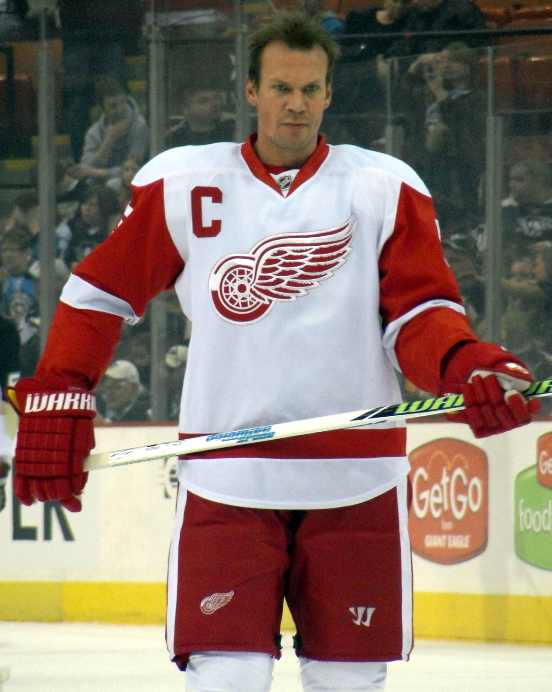
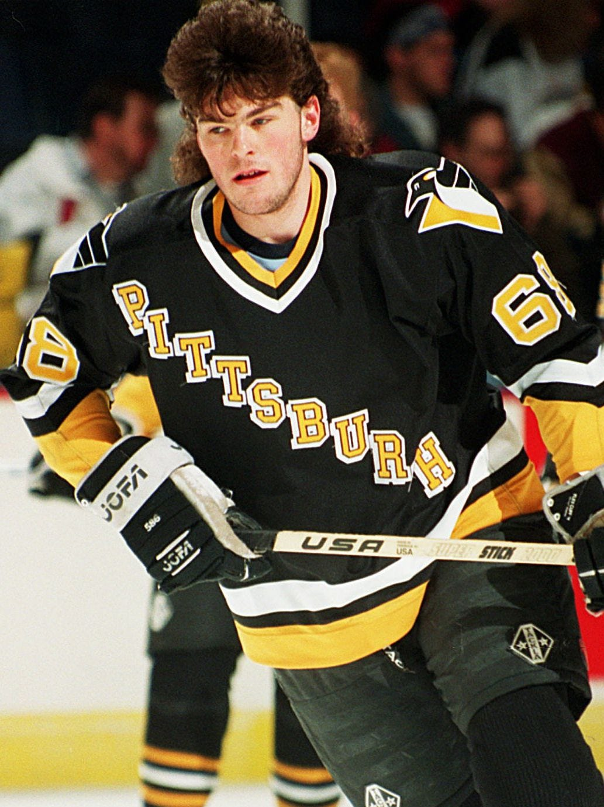
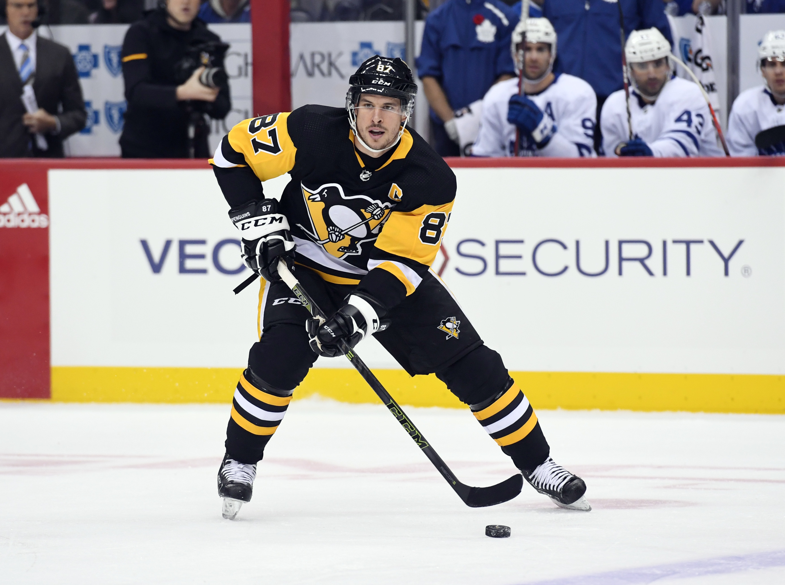
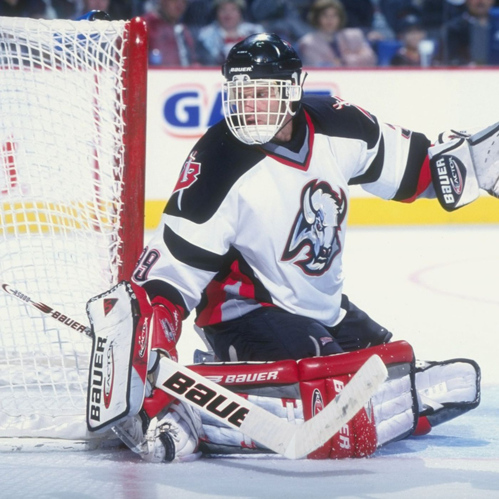
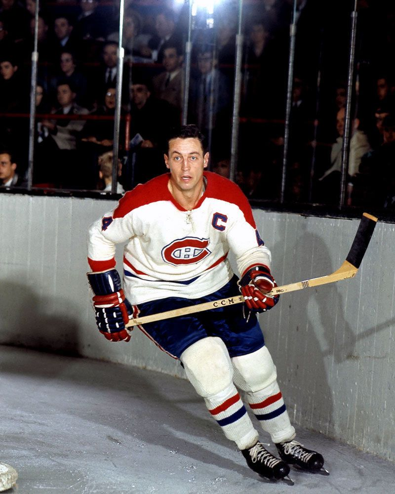
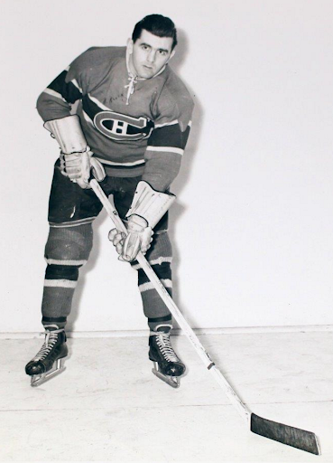
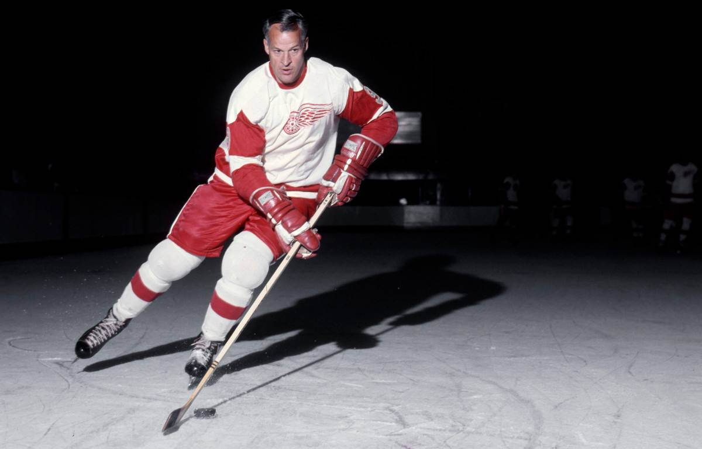
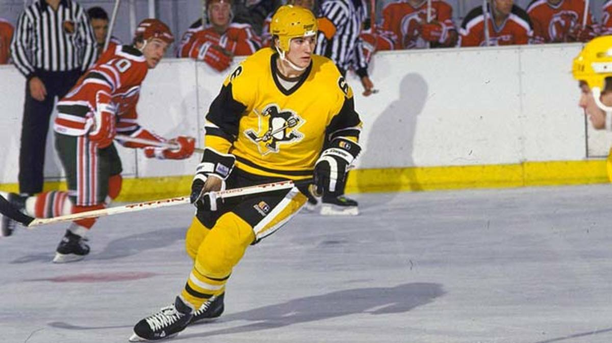
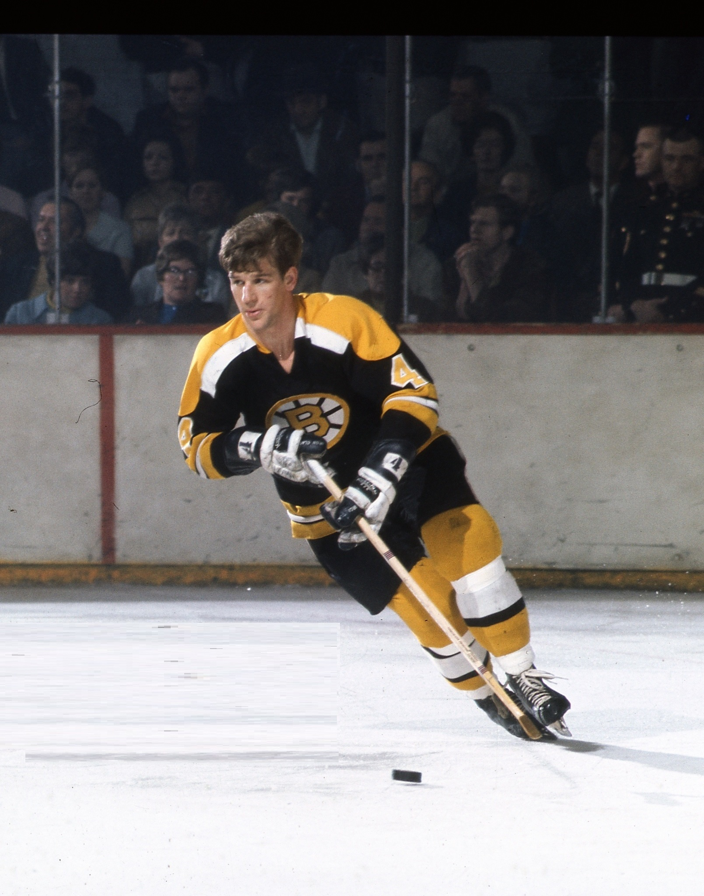
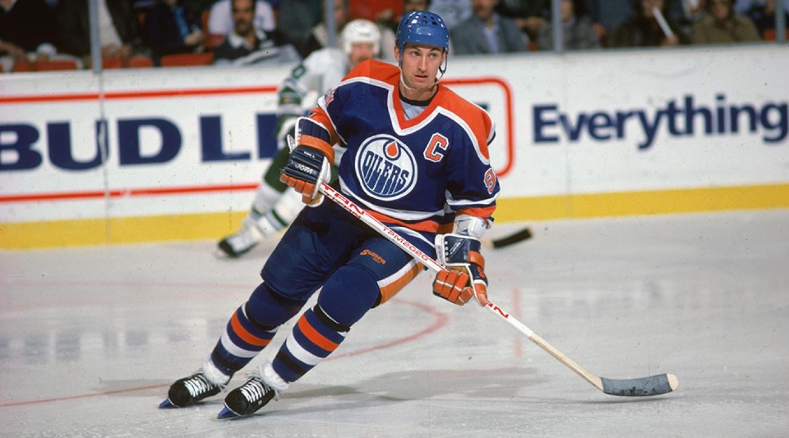

The Best NHL Players of All-Time
These are the best players in hockey history.
#10 Nicklas Lidstrom
Four Stanley Cups, seven Norris Trophies; Nicklas Lidstrom played with unwavering steadfastness . Dubbed “The Perfect Human” by adoring Red Wings fans, the Swede inspired a generation of young defenceman. Lidstrom lacked flash becuase he didn’t need it. Night after night the captain anchored his team with his poise and unshakable demeanour.
#9 Jaromir Jagr
Over his illustrious career Jagr has amassed the second-most points in NHL history (can you guess who has the most?!). A physically imposing winger, he used his size and strength to dominate the puck. Drafted fifth overall Jagr won back-to-back Stanley Cups with the Pittsburgh Penguins.
#8 Sidney Crosby
Scutinized since *before* he came in to the league, Crosby has been the face of the NHL for much of the 2010s. He began his career as an offensive firecracker and became the youngest captain ever to win the Cup. After nearly three years on the sideline due to concussions, Crosby and the Penguins would go on to win consecutive championships. Add two MVPS, two Art Ross trophies, two Rocket Richards, and two Conn Smythes; Sidney Crosby has nothing left to prove.
#7 Dominik Hasek
With his distinct “flopper” play style and seemlingly impossible saves, Dominik Hasek won an unprecedented six Vezina Trophies and was the first goaltender to be awarded with multiple Hart Memorial Trophies. He holds the highest career save percentage in league history (0.9223). Hasek was one of the first European goalies to excel in North America and won two Stanley Cups with the Red Wings.
#6 Maurice Richard
A bona fide goal-scorer, Maurice “Rocket” Richard was the first player in the NHL to score fifty goals in a single season and the first to score five-hundred career goals. He won an incredible eight Stanley Cups and captained his team for the last four. The award for the league’s leading goal-scorer is named after him.
#5 Jean Béliveau
Jean Béliveau spent his twenty-one season career with the Montréal Canadiens. By his second season in the NHL he was already among the top players in the league. He won ten Stanely Cups, two MVPs, an Art Ross, and a Conn Smythe. His long-term consistency cements Béliveau among the greatest of all-time.
#4 Gordie Howe
“Mr. Hockey” was the NHL’s most complete player during his twenty-six seasons, twenty-five of which were spent with the Detroit Red Wings. Howe is often considered to be the complete player to play hockey. His six Hart Memorial trophies are second to only Wayne Gretzky, and his comparisons with Jean Béliveau resulted in a fierce rivalry between the two greats.
#3 Mario Lemieux
Nicknamed “Le Magnifique” (The Magnificent One) and “Super Mario”, Lemieux was a big-bodied playmaker with magic hands capable of scoring wonder goals. He led the Pittsburgh Penguins along with Jaromir Jagr to Stanely Cups in 1991 and 1992. Despite health issues throughout his career Super Mario would dazzle spectators and opponents alike in his seventeen year career. He ranks second all-time in goals per game with an astounding 0.754.
#2 Bobby Orr
Bobby Orr revolutionzed what it meant to be a defenceman. He used his skating and playmaking to completely dominate games. He is the only defenceman to have won the league scoring title, and he won it twice. He also holds eight Norris trophies and back-to-back-to-back Hart trophies. Injuries to Orr’s left knee led to an early retirement, but not before he won two Stanley Cups with the Boston Bruins (who, at the time when Orr joined, had not qualified for the playoffs in seven years). Bobby Orr was the best defenceman in NHL history.
#1 Wayne Gretzky
Wayne Gretzky’s records are absurd. The gulf between Gretzky and the rest is hard to overexaggerate. His greatest asset was his hockey sense; average in size, speed, and strength, Gretzky excelled by his foresight and uncanny ability to be not where the puck was but where it would be. His many awards include nine Hart trophies, ten Art Ross trophies, four Stanley Cups, five Lester B. Pearson awards (now Ted Lindsey award), and five Lady Byng awards. Wayne Gretzky’s dominance was so great that:
Wayne Gretzky holds the record for most goals and most assists. If you took all of Wayne Gretzky’s goals away he would still be the NHL’s highest scoring player.
"The Great One" is the best hockey player the world has ever seen.